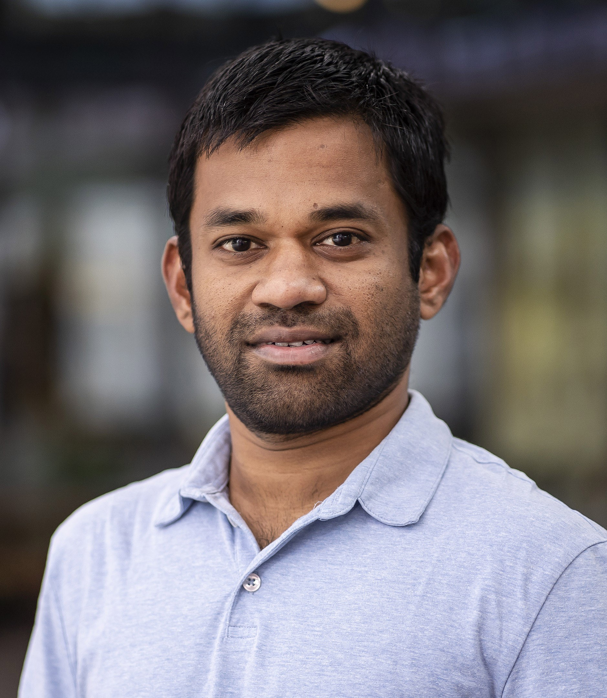
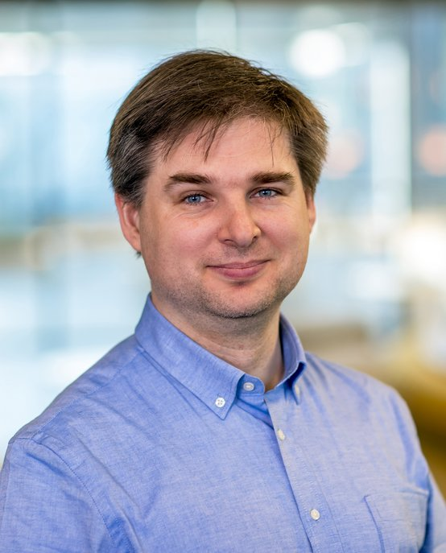

Fair Reinforcement Learning Tutorial 2024
Aug, 2024
IJCAI 2024 - Jeju
IJCAI 2024 - Jeju
| Home | Program | Contact |
The tutorial presents advances in fairness-aware reinforcement learning encompassing theoretical results as well as real-world applications. We cover motivating applications and technical details of incorporating fairness objectives into the reinforcement learning model, analyze fairness in reinforcement learning as multi-objective optimization, and explore impactful future directions.
|

Pratik Gajane |

Mykola Pechenizkiy |
Yingqian Zhang |